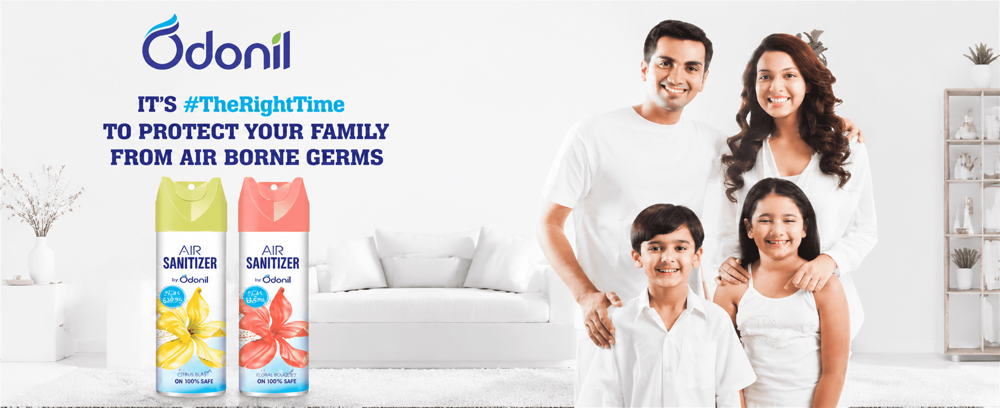
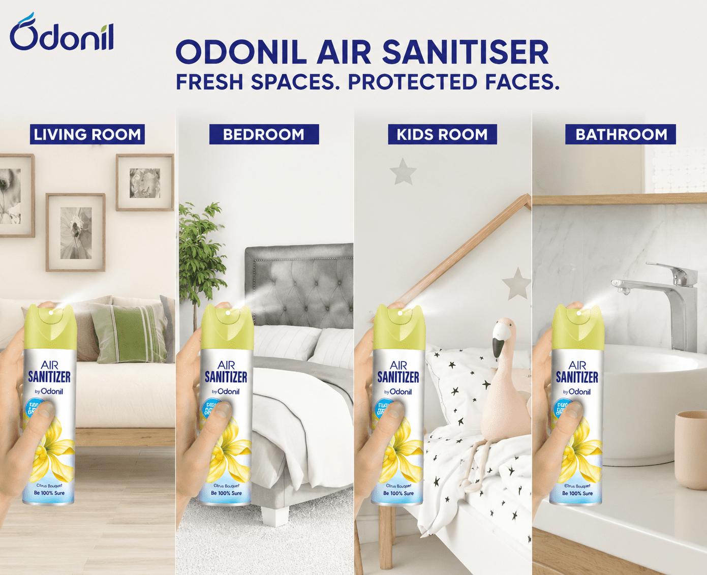

Air sanitization was unfamiliar to many households, so the product role had to be understood within seconds.
← Back to workFreshness meets protection.
Odonil · Air Sanitizer Film
Freshness meets protection.
Meet Hawa Ka Doctor.

Project overview
An unseen concern.
A memorable home-care answer.
Odonil extended its familiar fragrance world into air care with a sanitization benefit. The film needed to introduce that new role quickly, without losing the warmth associated with a fresh home.
“Hawa Ka Doctor” turns the product proposition into an easy memory device, connecting airborne-germ protection, fragrance and family reassurance in one direct story.
- Product
- Air Sanitizer
- Platform
- Hawa Ka Doctor
- Core Thought
- Fresh + Protected
- Audience
- Indian Families
The hero film
A household problem.
A human way to explain it.
The narrative transforms an invisible air-care concern into a familiar family moment, then lands the product as the simple protective action.
The challenge
Show what cannot be seen.
Keep the message human.
Protection needed authority while fragrance preserved the welcoming, optimistic character of Odonil.
The narrative system
Concern to care.
In three clear beats.
- 01
Reveal
Frame airborne germs as an invisible home concern through a recognisable family situation.
- 02
Introduce
Give Odonil Air Sanitizer a simple role and anchor recall through “Hawa Ka Doctor.”
- 03
Reassure
Close on a brighter, fresher home with the family and product united in one frame.
The product world
Clinical clarity.
Domestic warmth.
White space signals cleanliness, Odonil blue carries trust and bright floral accents preserve fragrance. Product demonstrations and family imagery keep functional information accessible.

The communication craft
Protection explained.
Freshness retained.
Family-first framing
The human stakes arrive before technical information, creating immediate relevance.
Visible product role
Pack shots and spray action make the new air-care behaviour easy to follow.
Memorable language
“Hawa Ka Doctor” gives an unfamiliar category a short, repeatable expression.
Bright resolution
Clean interiors and smiling family imagery resolve the functional story with warmth.
The outcome
A new air-care idea.
A familiar reason to believe.
The film helps Odonil move from fragrance into fresh-and-healthy home care through one product, one household action and one memorable platform.
Category clarity
The air sanitizer proposition is introduced in direct, everyday language.
Brand continuity
Fragrance remains present while protection expands Odonil’s role.
Strong recall
A distinctive verbal hook turns product education into a memorable campaign.
A fresher home.A clearer protection story.
Have a new category to make easy to understand?